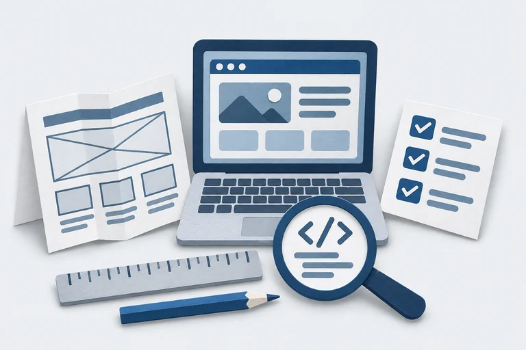

Vibe-Coding Center / Field guide
Helpful GitHubs
Browse the repository shelf for optional tools and references.
Optional tools for purposeful design, accessible interfaces, and security testing. These links complement the three core instruction files.

unslop
heydamir/unslop · CC-BY-4.0. Not named in the three core instruction files; optional external resource.
Polish a website after its purpose and structure are clear. A focused design-refinement skill; requires an agent and optional browser/image tools. Inspect scripts before use; generated images may incur service costs. Retain attribution.
UI UX Pro Max
nextlevelbuilder/ui-ux-pro-max-skill · MIT. Referenced in WEB_DESIGN.md.
Explore design systems, typography, and patterns that fit your users’ task. Optional CLI and search scripts require developer setup. Treat generated suggestions as candidates to test, and review the rights of any fonts, icons, or other assets separately.
Design Bites
educlopez/design-bites · MIT. Referenced in WEB_DESIGN.md.
Read DESIGN.md examples to discuss visual principles with an assistant. Use as reference, not a brand-cloning template. Its CLI documents an install telemetry ping and an opt-out; reading files directly avoids requiring that CLI. Site brands and images retain separate rights.
axe-core
dequelabs/axe-core · MPL-2.0. Referenced in WEB_DESIGN.md.
Find automated accessibility issues in the actual rendered page. MPL-2.0. Automation detects a subset of barriers; incomplete results and keyboard, screen reader, content, and journey checks need human review.
Playwright
microsoft/playwright · Apache-2.0. Not named in the three core instruction files; optional external resource.
Make main-journey browser checks repeatable. Requires developer setup and browser binaries. Use invented data, protect saved authentication state, and keep external email, payments, or destructive actions sandboxed.
Gitleaks
gitleaks/gitleaks · MIT. Not included in the three core instruction files; optional external resource.
Find possible exposed credentials in local files and Git history. Use redacted output and keep reports private. Review matches and rotate confirmed leaked credentials. Upstream now limits future releases to security patches.
ZAP
zaproxy/zaproxy · Apache-2.0. Not included in the three core instruction files; optional external resource.
Inspect a running web application for potential security weaknesses. Use only a disposable local or explicitly authorized staging target with invented data. Define scope carefully; active tests can change state. Validate alerts.
Accessibility Insights for Web
microsoft/accessibility-insights-web · MIT. Not included in the three core instruction files; optional external resource.
Follow guided keyboard and manual checks alongside automated accessibility tests. Review extension permissions and telemetry settings before inspecting private pages. Its assessment overview targets WCAG 2.1 AA; check WCAG 2.2 additions separately.